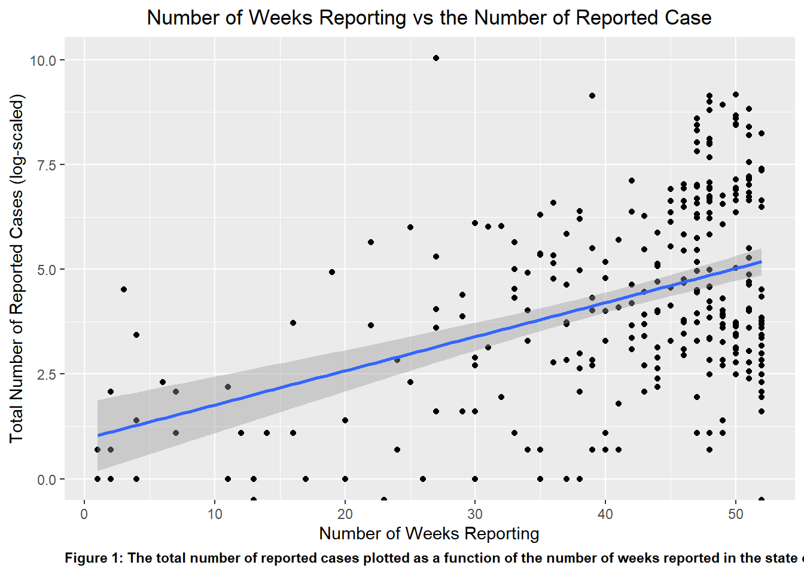
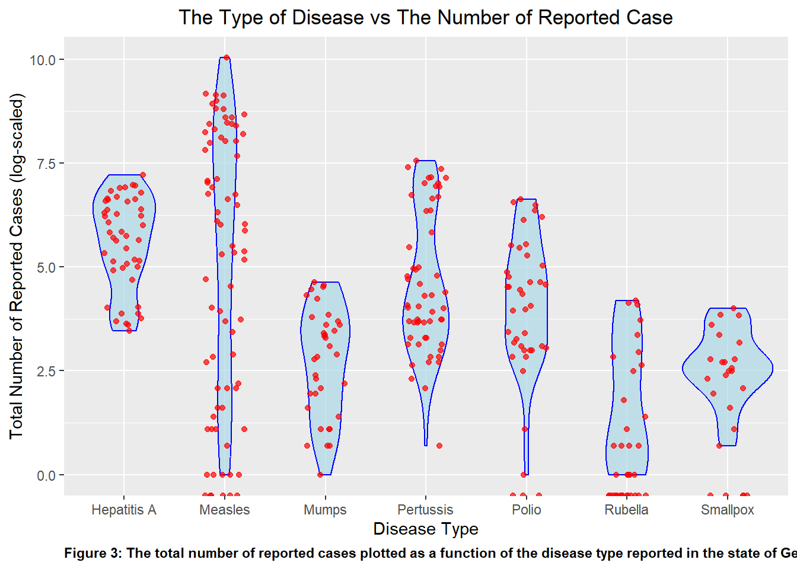

The following space lists all the packages I used for this exercise:
library(dslabs)library(tidyverse)
── Attaching core tidyverse packages ──────────────────────── tidyverse 2.0.0 ──
✔ dplyr 1.1.3 ✔ readr 2.1.4
✔ forcats 1.0.0 ✔ stringr 1.5.0
✔ ggplot2 3.4.4 ✔ tibble 3.2.1
✔ lubridate 1.9.3 ✔ tidyr 1.3.0
✔ purrr 1.0.2
── Conflicts ────────────────────────────────────────── tidyverse_conflicts() ──
✖ dplyr::filter() masks stats::filter()
✖ dplyr::lag() masks stats::lag()
ℹ Use the conflicted package (<http://conflicted.r-lib.org/>) to force all conflicts to become errors
I explored the gapminder dataset from the dslabs package using the help() function to pull out the help page that describes the dataset
help("gapminder")
starting httpd help server ... done
I explored the structure of the dataset using the str() function, the summary using the summary() function and used the class() function to check the type of object for this dataset.
str(gapminder)
'data.frame': 10545 obs. of 9 variables:
$ country : Factor w/ 185 levels "Albania","Algeria",..: 1 2 3 4 5 6 7 8 9 10 ...
$ year : int 1960 1960 1960 1960 1960 1960 1960 1960 1960 1960 ...
$ infant_mortality: num 115.4 148.2 208 NA 59.9 ...
$ life_expectancy : num 62.9 47.5 36 63 65.4 ...
$ fertility : num 6.19 7.65 7.32 4.43 3.11 4.55 4.82 3.45 2.7 5.57 ...
$ population : num 1636054 11124892 5270844 54681 20619075 ...
$ gdp : num NA 1.38e+10 NA NA 1.08e+11 ...
$ continent : Factor w/ 5 levels "Africa","Americas",..: 4 1 1 2 2 3 2 5 4 3 ...
$ region : Factor w/ 22 levels "Australia and New Zealand",..: 19 11 10 2 15 21 2 1 22 21 ...
summary(gapminder)
country year infant_mortality life_expectancy
Albania : 57 Min. :1960 Min. : 1.50 Min. :13.20
Algeria : 57 1st Qu.:1974 1st Qu.: 16.00 1st Qu.:57.50
Angola : 57 Median :1988 Median : 41.50 Median :67.54
Antigua and Barbuda: 57 Mean :1988 Mean : 55.31 Mean :64.81
Argentina : 57 3rd Qu.:2002 3rd Qu.: 85.10 3rd Qu.:73.00
Armenia : 57 Max. :2016 Max. :276.90 Max. :83.90
(Other) :10203 NA's :1453
fertility population gdp continent
Min. :0.840 Min. :3.124e+04 Min. :4.040e+07 Africa :2907
1st Qu.:2.200 1st Qu.:1.333e+06 1st Qu.:1.846e+09 Americas:2052
Median :3.750 Median :5.009e+06 Median :7.794e+09 Asia :2679
Mean :4.084 Mean :2.701e+07 Mean :1.480e+11 Europe :2223
3rd Qu.:6.000 3rd Qu.:1.523e+07 3rd Qu.:5.540e+10 Oceania : 684
Max. :9.220 Max. :1.376e+09 Max. :1.174e+13
NA's :187 NA's :185 NA's :2972
region
Western Asia :1026
Eastern Africa : 912
Western Africa : 912
Caribbean : 741
South America : 684
Southern Europe: 684
(Other) :5586
class(gapminder)
[1] "data.frame"
First, I created the object africadata, which includes only observations from Africa. And then I checked the structure and summary of the new object using str() and summary()
#I used the 'filter()' function to select only the observations from Africa, using the variable 'continent'africadata <- gapminder %>%filter(continent =="Africa")#Check if the new object was correctly saved using the 'str()' and 'summary()' functionsstr(africadata)
'data.frame': 2907 obs. of 9 variables:
$ country : Factor w/ 185 levels "Albania","Algeria",..: 2 3 18 22 26 27 29 31 32 33 ...
$ year : int 1960 1960 1960 1960 1960 1960 1960 1960 1960 1960 ...
$ infant_mortality: num 148 208 187 116 161 ...
$ life_expectancy : num 47.5 36 38.3 50.3 35.2 ...
$ fertility : num 7.65 7.32 6.28 6.62 6.29 6.95 5.65 6.89 5.84 6.25 ...
$ population : num 11124892 5270844 2431620 524029 4829291 ...
$ gdp : num 1.38e+10 NA 6.22e+08 1.24e+08 5.97e+08 ...
$ continent : Factor w/ 5 levels "Africa","Americas",..: 1 1 1 1 1 1 1 1 1 1 ...
$ region : Factor w/ 22 levels "Australia and New Zealand",..: 11 10 20 17 20 5 10 20 10 10 ...
summary(africadata)
country year infant_mortality life_expectancy
Algeria : 57 Min. :1960 Min. : 11.40 Min. :13.20
Angola : 57 1st Qu.:1974 1st Qu.: 62.20 1st Qu.:48.23
Benin : 57 Median :1988 Median : 93.40 Median :53.98
Botswana : 57 Mean :1988 Mean : 95.12 Mean :54.38
Burkina Faso: 57 3rd Qu.:2002 3rd Qu.:124.70 3rd Qu.:60.10
Burundi : 57 Max. :2016 Max. :237.40 Max. :77.60
(Other) :2565 NA's :226
fertility population gdp continent
Min. :1.500 Min. : 41538 Min. :4.659e+07 Africa :2907
1st Qu.:5.160 1st Qu.: 1605232 1st Qu.:8.373e+08 Americas: 0
Median :6.160 Median : 5570982 Median :2.448e+09 Asia : 0
Mean :5.851 Mean : 12235961 Mean :9.346e+09 Europe : 0
3rd Qu.:6.860 3rd Qu.: 13888152 3rd Qu.:6.552e+09 Oceania : 0
Max. :8.450 Max. :182201962 Max. :1.935e+11
NA's :51 NA's :51 NA's :637
region
Eastern Africa :912
Western Africa :912
Middle Africa :456
Northern Africa :342
Southern Africa :285
Australia and New Zealand: 0
(Other) : 0
Here, I created two new objects. africachild contains only the variables infant_mortality and life_expectancy, meanwhile africapop contains the population and life_expectancy variables. To do this I used the select() function. And then I explored the structure and summary of both new objects using str() and summary() to check if the objects were correctly created.
#Creating new objects, using the 'select()' function to choose only the variables I need from the original datasetafricachild <- africadata %>%select(c(infant_mortality, life_expectancy))africapop <- africadata %>%select(c(population, life_expectancy))#Using 'str()' to check the structure of the new objectsstr(africachild)
'data.frame': 2907 obs. of 2 variables:
$ infant_mortality: num 148 208 187 116 161 ...
$ life_expectancy : num 47.5 36 38.3 50.3 35.2 ...
str(africapop)
'data.frame': 2907 obs. of 2 variables:
$ population : num 11124892 5270844 2431620 524029 4829291 ...
$ life_expectancy: num 47.5 36 38.3 50.3 35.2 ...
#Using 'summary()' to check the summary of the new objectssummary(africachild)
infant_mortality life_expectancy
Min. : 11.40 Min. :13.20
1st Qu.: 62.20 1st Qu.:48.23
Median : 93.40 Median :53.98
Mean : 95.12 Mean :54.38
3rd Qu.:124.70 3rd Qu.:60.10
Max. :237.40 Max. :77.60
NA's :226
summary(africapop)
population life_expectancy
Min. : 41538 Min. :13.20
1st Qu.: 1605232 1st Qu.:48.23
Median : 5570982 Median :53.98
Mean : 12235961 Mean :54.38
3rd Qu.: 13888152 3rd Qu.:60.10
Max. :182201962 Max. :77.60
NA's :51
Now, I created a graph that illustrates life expectancy as a function of child mortality using ggplot(), with the africachild object.
#Plotting life expenctancy as a function of infant mortality, using the 'ggplot()' package, in this case I used a point geometry using 'geom_point()'ggplot(data= africachild, aes(x= infant_mortality, y= life_expectancy))+geom_point()
It is observed that there is a negative correlation between infant mortality and life expectancy.
And here, I created a graph that shows life expectancy as a function of population using ggplot(), with the africapop object.
#I used the 'geom_point()' geometry to plot the data points and set the x-axis to log scale using 'scale_x_log10()'.ggplot(data= africapop ,aes(x= population, y= life_expectancy))+geom_point()+scale_x_log10()
There is a positive correlation between life expectancy and population size, however there can be observed some weird ‘streaks’. If looking at the original dataset, this includes the population size from 1960 to 2016, so there are actually many years of observations instead of just one.
I noticed there are years with missing data (NAs). To figure out which years have missing data I used the is.na() function in combination with filter().
#Use `filter(is.na(infant_mortality)) to filter all observation that have missing values (NAs). Then I used 'count(year)', to summarize which years have the selected missing data.africadata %>%filter(is.na(infant_mortality)) %>%count(year)
There is missing info on infant mortality from the years 1960 to 1981 and 2016. So it was best to choose a specific year for the analysis. Here, I created a new object africa2000 with only data from the year 2000. Then I checked the new data frame using str() and summary()
#Create the object 'africa2000' using the 'filter()' function on the variable 'year' to select only the observations from the year 2000.africa2000 <- africadata %>%filter(year ==2000)#Check the new object using 'str()' and 'summary()'str(africa2000)
'data.frame': 51 obs. of 9 variables:
$ country : Factor w/ 185 levels "Albania","Algeria",..: 2 3 18 22 26 27 29 31 32 33 ...
$ year : int 2000 2000 2000 2000 2000 2000 2000 2000 2000 2000 ...
$ infant_mortality: num 33.9 128.3 89.3 52.4 96.2 ...
$ life_expectancy : num 73.3 52.3 57.2 47.6 52.6 46.7 54.3 68.4 45.3 51.5 ...
$ fertility : num 2.51 6.84 5.98 3.41 6.59 7.06 5.62 3.7 5.45 7.35 ...
$ population : num 31183658 15058638 6949366 1736579 11607944 ...
$ gdp : num 5.48e+10 9.13e+09 2.25e+09 5.63e+09 2.61e+09 ...
$ continent : Factor w/ 5 levels "Africa","Americas",..: 1 1 1 1 1 1 1 1 1 1 ...
$ region : Factor w/ 22 levels "Australia and New Zealand",..: 11 10 20 17 20 5 10 20 10 10 ...
summary(africa2000)
country year infant_mortality life_expectancy
Algeria : 1 Min. :2000 Min. : 12.30 Min. :37.60
Angola : 1 1st Qu.:2000 1st Qu.: 60.80 1st Qu.:51.75
Benin : 1 Median :2000 Median : 80.30 Median :54.30
Botswana : 1 Mean :2000 Mean : 78.93 Mean :56.36
Burkina Faso: 1 3rd Qu.:2000 3rd Qu.:103.30 3rd Qu.:60.00
Burundi : 1 Max. :2000 Max. :143.30 Max. :75.00
(Other) :45
fertility population gdp continent
Min. :1.990 Min. : 81154 Min. :2.019e+08 Africa :51
1st Qu.:4.150 1st Qu.: 2304687 1st Qu.:1.274e+09 Americas: 0
Median :5.550 Median : 8799165 Median :3.238e+09 Asia : 0
Mean :5.156 Mean : 15659800 Mean :1.155e+10 Europe : 0
3rd Qu.:5.960 3rd Qu.: 17391242 3rd Qu.:8.654e+09 Oceania : 0
Max. :7.730 Max. :122876723 Max. :1.329e+11
region
Eastern Africa :16
Western Africa :16
Middle Africa : 8
Northern Africa : 6
Southern Africa : 5
Australia and New Zealand: 0
(Other) : 0
And here I made a new plot for life expectancy as a function of infant mortality for the year 2000 only.
It is observed a negative association between infant mortality and life expectancy, however, the association between life expectancy and population is not clear. To do additional modeling, I tried to fit a linear model using the lm() function on the africa2000 dataset. I used life expectancy as the outcome and infant mortality as a predictor in the fit1 model, and life_expectancy also as outcome and population as the predictor in the fit2 model.
fit1 <-lm(life_expectancy ~ infant_mortality, data = africa2000)fit2 <-lm(life_expectancy ~ population, data = africa2000)
And finally I used the summary() function to look at the fit results for both models.
summary(fit1)
Call:
lm(formula = life_expectancy ~ infant_mortality, data = africa2000)
Residuals:
Min 1Q Median 3Q Max
-22.6651 -3.7087 0.9914 4.0408 8.6817
Coefficients:
Estimate Std. Error t value Pr(>|t|)
(Intercept) 71.29331 2.42611 29.386 < 2e-16 ***
infant_mortality -0.18916 0.02869 -6.594 2.83e-08 ***
---
Signif. codes: 0 '***' 0.001 '**' 0.01 '*' 0.05 '.' 0.1 ' ' 1
Residual standard error: 6.221 on 49 degrees of freedom
Multiple R-squared: 0.4701, Adjusted R-squared: 0.4593
F-statistic: 43.48 on 1 and 49 DF, p-value: 2.826e-08
summary(fit2)
Call:
lm(formula = life_expectancy ~ population, data = africa2000)
Residuals:
Min 1Q Median 3Q Max
-18.429 -4.602 -2.568 3.800 18.802
Coefficients:
Estimate Std. Error t value Pr(>|t|)
(Intercept) 5.593e+01 1.468e+00 38.097 <2e-16 ***
population 2.756e-08 5.459e-08 0.505 0.616
---
Signif. codes: 0 '***' 0.001 '**' 0.01 '*' 0.05 '.' 0.1 ' ' 1
Residual standard error: 8.524 on 49 degrees of freedom
Multiple R-squared: 0.005176, Adjusted R-squared: -0.01513
F-statistic: 0.2549 on 1 and 49 DF, p-value: 0.6159
Based on the fit1 model, it is observed that infant mortality is statistically associated to life expectancy (p<0.001). It seems that life expectancy decreases as infant mortality increases. However, it appears there is no association between life expectancy and population size, according to the fit2 model, given p= 0.616, so there could be a different model that explains this association.
This section is contributed by Kelly Cao
Loading and Checking Data
The following section shows that the data set us_contagious_diseases has 6 potential variables to analyze: disease (name), state, year, weeks_reporting, count (number of cases), and population. The 6 variables are reported for the following contagious diseases: Hepatitis A, Measles, Mumps, Pertussis, Polio, Rubella, and Smallpox for the US states.
#Installing and loading needed packages with the command install.packages() and the library() functionlibrary("dslabs")library(renv)library(tidyverse)#The help() function is used to look at data provided in 'us_contagious_diseases'help(us_contagious_diseases)#Check the summary, class, and structure of the data set 'us_contagious_diseases'str(us_contagious_diseases)
disease state year weeks_reporting
Hepatitis A:2346 Alabama : 315 Min. :1928 Min. : 0.00
Measles :3825 Alaska : 315 1st Qu.:1950 1st Qu.:31.00
Mumps :1785 Arizona : 315 Median :1975 Median :46.00
Pertussis :2856 Arkansas : 315 Mean :1971 Mean :37.38
Polio :2091 California: 315 3rd Qu.:1990 3rd Qu.:50.00
Rubella :1887 Colorado : 315 Max. :2011 Max. :52.00
Smallpox :1275 (Other) :14175
count population
Min. : 0 Min. : 86853
1st Qu.: 7 1st Qu.: 1018755
Median : 69 Median : 2749249
Mean : 1492 Mean : 4107584
3rd Qu.: 525 3rd Qu.: 4996229
Max. :132342 Max. :37607525
NA's :214
class(us_contagious_diseases)
[1] "data.frame"
Processing and Cleaning Data
I chose to use the count, weeks_reporting, and disease columns to process and clean. After processing, the disease_count object was created to represent the columns of count and disease. No further filtering was performed on that object. Another object, Weeks_Count, is used to represent count and weeks_reporting. In addition to the select() function used to select the two columns, the filter() function was used to remove any rows that had weeks_reporting= 0, as that suggest no reporting was done for those selected data points. After that was excluded, 288 observations were left in the Weeks_Count object.
#An object is created that includes only data from the state of Georgia using the pipe operator and the filter() function.Georgia_data <- us_contagious_diseases %>%filter(state =='Georgia')#The str() and summary() function is used to verify that the object was made correctlystr(Georgia_data)
disease state year weeks_reporting
Hepatitis A:46 Georgia :315 Min. :1928 Min. : 0.00
Measles :75 Alabama : 0 1st Qu.:1950 1st Qu.:33.00
Mumps :35 Alaska : 0 Median :1975 Median :45.00
Pertussis :56 Arizona : 0 Mean :1971 Mean :37.66
Polio :41 Arkansas : 0 3rd Qu.:1990 3rd Qu.:49.00
Rubella :37 California: 0 Max. :2011 Max. :52.00
Smallpox :25 (Other) : 0
count population
Min. : 0.0 Min. :2901933
1st Qu.: 8.5 1st Qu.:3444578
Median : 42.0 Median :5009127
Mean : 643.0 Mean :5235135
3rd Qu.: 352.0 3rd Qu.:6478216
Max. :22965.0 Max. :9830160
"rval"
#Another object is created with 'weeks_reporting' and 'count'. This will group the total number of reported cases with the number of weeks counts were reported for that year. The rows that had 0 in "weeks_reporting" were excluded with the filter() function.Weeks_Count <-select(Georgia_data, weeks_reporting, count) %>%filter(weeks_reporting !=0)#The str() and summary() function is used to verify that the object was made correctlystr(Weeks_Count)
'data.frame': 288 obs. of 2 variables:
$ weeks_reporting: num 47 51 50 48 51 50 47 50 48 48 ...
$ count : num 509 922 990 750 763 ...
summary(Weeks_Count)
weeks_reporting count
Min. : 1.00 Min. : 0.0
1st Qu.:37.00 1st Qu.: 16.0
Median :46.00 Median : 55.5
Mean :41.19 Mean : 703.2
3rd Qu.:50.00 3rd Qu.: 468.8
Max. :52.00 Max. :22965.0
#Another object is created with 'disease' and 'count', which would group the disease type with the total number of reported cases in Georgia into one object. disease_count<-select(Georgia_data, count, disease)#The str() and summary() function is used to verify that the object was made correctlystr(disease_count)
I plotted the Weeks_Count object as a scatter plot, with the total number of reported cases being plotted as a function of the number of weeks reported in the state of Georgia. When fully plotted with a line of best fit, visually, there appears to be a positive correlation between the number of reported case and the number of weeks that the counts were reported, which makes logical sense. The total number of cases reported will increase when the time that is used to collect the reported response increase.
#Using the package ggplot2 (which is found in tidyverse) to create a scatter plot using the variables in the object 'Weeks_Count' and assigning it to the variable 'p1p1 <-ggplot(Weeks_Count, aes(x = weeks_reporting, y =log(count))) +geom_point()+geom_smooth(method ="lm")+ggtitle('Number of Weeks Reporting vs the Number of Reported Case')+theme(plot.title=element_text(hjust=0.5))+xlab('Number of Weeks Reporting')+ylab('Total Number of Reported Cases (log-scaled)')+labs(caption ="Figure 1: The total number of reported cases plotted as a function of the number of weeks reported in the state of Georgia")+theme(plot.caption =element_text(hjust=0, face="bold"))#The theme() function was a great way to manipulate the specific element in the plot, whether it was color, size, or orientation of the text or visuals.#Using the plot() function to determine if the plot was properly createdplot(p1)

Similar to P1, I initially plotted disease_count as a bar graph to visualize the number of reported cases per disease type. This is shown in p2. Upon initial observation of the graph, it is clear that compared to the other disease listed, Measles easily acted as an outlier in the data set with the greatest number of reported case by far. This is followed by Pertussis and Hepatitis A.
#Repeating the previous two steps to plot 'disease_count' in 'p2'p2 <-ggplot(disease_count, aes(x = disease, y = count)) +geom_bar(stat ="identity", position ="dodge", fill ="skyblue")+ggtitle('The Type of Disease vs The Number of Reported Case')+theme(plot.title=element_text(hjust=0.5))+xlab('Disease Type')+ylab('Total Number of Reported Cases')+labs(caption ="Figure 2: The total number of reported cases plotted as a function of the disease type reported in the state of Georgia")+theme(plot.caption =element_text(hjust=0, face="bold"))#print the plotplot(p2)
As I was unable to discern any valuable information for the disease Smallpox or Rubella due to the scaling, I replotted the graph as a violin plot overlayed with plot points to better visualize the spread of the data over the different disease while accounting for the outlier that caused the scaling issue. I plotted this as p2_2.The violin plot showed the data distribution and the density of each variable. The individual data points overlaps it for more visual clarity.
#When looking at the previous plot, there is a distinct outlier for the Measles category, thus making it difficult to determine the value that's provided from the other disease. To combat that, another plot was created to improve the clarity of the visualization of the same data set.p2_2 <-ggplot(disease_count, aes(x = disease, y =log(count))) +geom_violin(fill ="lightblue", color ="blue", alpha =0.7) +geom_jitter(width =0.2, color ="red", alpha =0.7) +ggtitle('The Type of Disease vs The Number of Reported Case')+theme(plot.title=element_text(hjust=0.5))+xlab('Disease Type')+ylab('Total Number of Reported Cases (log-scaled)')+labs(caption ="Figure 3: The total number of reported cases plotted as a function of the disease type reported in the state of Georgia")+theme(plot.caption =element_text(hjust=0, face="bold"))#print the plotplot(p2_2)

Additional plot for fun
Looking at Figure 4, one can see that aside from Polio all of the other diseases listed show a upward positive trend. This suggests that Polio have little change case reported despite the time elapse, which aligns with historical and public vaccination efforts. Looking at Measles, it showed the greatest positive slope, showing the greatest growth in number of case over some set of time, which corroborates what is shown in Figure 2.
#Replotting p1 with clearly assigned data point to disease variable. Compared to p1, I added color and a legend to the points to distinguish which data point represent which disease type. p4 <-ggplot(Georgia_data, aes(x = weeks_reporting, y =log(count), color = disease, label = disease)) +geom_point()+geom_smooth(method ="lm")+ggtitle('Number of Weeks Reporting vs the Number of Reported Case')+theme(plot.title=element_text(hjust=0.5))+xlab('Number of Weeks Reporting')+ylab('Total Number of Reported Cases (log-scaled)')+labs(caption ="Figure 4: The total number of reported cases plotted as a function of the number of weeks reported in the state of Georgia")+theme(plot.caption =element_text(hjust=0, face="bold"))+labs(color ="Disease Type")#The theme() function was a great way to manipulate the specific element in the plot, whether it was color, size, or orientation of the text or visuals.#Using the plot() function to determine if the plot was properly createdplot(p4)
Analysis and Conclusion
I then fitted both objects to a linear model, with count as thte outcome for both models and weeks_reporting and disease as the predictor respectively.
Based on the results of the linear model analysis, both models seem fairly reliable with lmfit2 having the edge.
The second model has a higher R-squared, suggesting that it explains a larger proportion of variance in the response variable. The F-statistic is greater in this model, indicating a better overall fit.
The low p-value for lmfit1 suggests that weeks_reporting may have some significance in predicting the outcome count. The same is especially true for the second model.
The lmfit2 model also had a lower residual standard error compared to lmfit1, further suggesting that the second model’s prediction are closer to the actual value on average.
Based on the following observation, lmfit2 appears to perform as the better model, with a more significant predictor, a higher proportion of explained variance, a higher F-statistic, and a lower residual standard error.
#Fitting the data set to a linear model with 'count' as the outcome and 'weekly_reporting' as the predictorlmfit1 <-lm(count ~ weeks_reporting, Weeks_Count)#Use the summary() command to check over the fit summary(lmfit1)
Call:
lm(formula = count ~ weeks_reporting, data = Weeks_Count)
Residuals:
Min 1Q Median 3Q Max
-910.6 -761.0 -519.6 -99.6 22533.8
Coefficients:
Estimate Std. Error t value Pr(>|t|)
(Intercept) -86.531 421.657 -0.205 0.8375
weeks_reporting 19.175 9.821 1.952 0.0519 .
---
Signif. codes: 0 '***' 0.001 '**' 0.01 '*' 0.05 '.' 0.1 ' ' 1
Residual standard error: 2020 on 286 degrees of freedom
Multiple R-squared: 0.01315, Adjusted R-squared: 0.009702
F-statistic: 3.812 on 1 and 286 DF, p-value: 0.05187
#Fitting the data set to a linear model with 'count' as the outcome and 'disease' as the predictorlmfit2 <-lm(count ~ disease, disease_count)#Use the summary() command to check over the fit summary(lmfit2)
Call:
lm(formula = count ~ disease, data = disease_count)
Residuals:
Min 1Q Median 3Q Max
-2073.1 -306.5 -21.2 31.7 20891.9
Coefficients:
Estimate Std. Error t value Pr(>|t|)
(Intercept) 431.13 263.86 1.634 0.103
diseaseMeasles 1642.02 335.15 4.899 1.56e-06 ***
diseaseMumps -401.93 401.41 -1.001 0.317
diseasePertussis -85.09 356.11 -0.239 0.811
diseasePolio -282.76 384.37 -0.736 0.462
diseaseRubella -421.78 395.20 -1.067 0.287
diseaseSmallpox -415.81 444.67 -0.935 0.350
---
Signif. codes: 0 '***' 0.001 '**' 0.01 '*' 0.05 '.' 0.1 ' ' 1
Residual standard error: 1790 on 308 degrees of freedom
Multiple R-squared: 0.1744, Adjusted R-squared: 0.1583
F-statistic: 10.84 on 6 and 308 DF, p-value: 5.986e-11